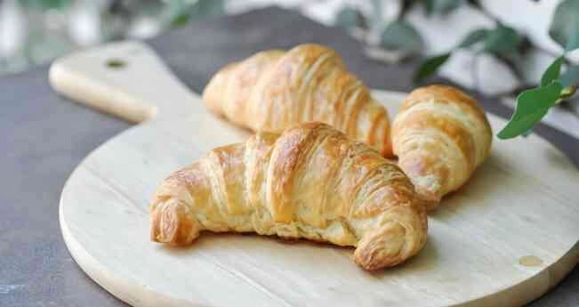
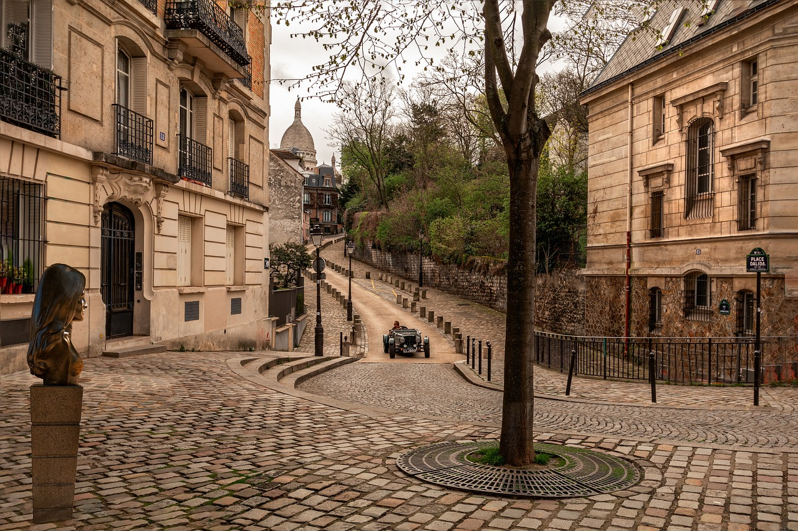

Визначні пам'ятки
Головні символи Парижа вражають своєю величчю. Ейфелева вежа ввечері сяє тисячами вогнів, а величний Собор Паризької Богоматері та Лувр зберігають таємниці століть.

Кухня та гастрономія
Французька кухня — це окреме мистецтво. Смакування хрустких круасанів із кавою на терасі затишного кафе та вечеря з класичним французьким цибульним супом залишили найтепліші спогади.

Культура та традиції
Парижани вміють насолоджуватися життям (концепція *la joie de vivre*). Вуличні художники на Монмартрі, неквапливі розмови за столиками кав'ярень і прогулянки вздовж Сени формують унікальний ритм міста.

Особисті історії
Коли ми заблукали на вузеньких вулицях Латинського кварталу під час вечірньої зливи, випадково зайшли у старий книжкові магазинчик, де перечекали дощ за розмовами з місцевим продавцем. Саме такі непередбачувані моменти роблять подорожі з друзями особливими.